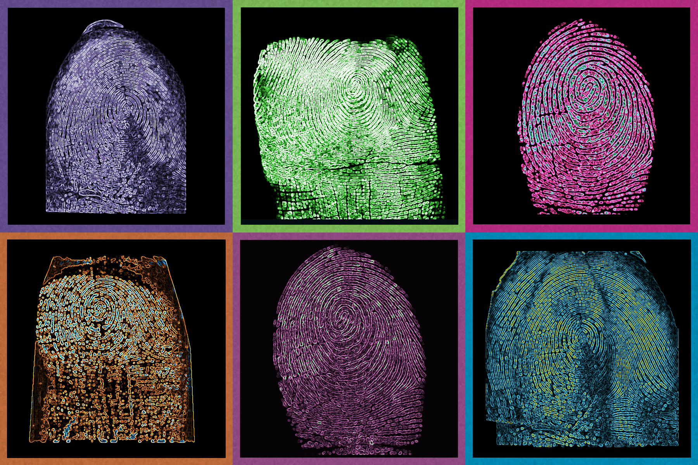

1. Image Processing
It is the first step in process of
fingerprint recognition. It refers to analysis and manipulation of digital images to
enhance quality, remove noise etc... Different sort of algorithms are used to extract relevant
information.
It involves mathematical concepts like convolution, Fourier transformation and
statistical modelling.
Convolution:
It involves combining two functions to produce a third function that represents the
mathematical integration of the two input functions.
In the context of image processing, convolution refers to a mathematical operation
that is applied to an image using a kernel or a filter. It is a fundamental operation
used for various tasks such as image enhancement, feature extraction, and image
analysis.
Fourier Transform : It is a mathematical model which help to transform the
signals between two different domains such as frequency domain to time domain or vice
versa.In the context of Image Processing we transform from geometrical domain to
frequency domain for easier and efficient analysis of fingerprint.
2. Ridge Structural analysis
In order to interpret fingerprints we perform Ridge Structural Analysis to extract crucial data about Ridge pattens visible in fingerprint image. This data is further used in procedure like feature extraction, Minutiae extraction and Matching algorithm etc...
To extract more useful information and features for identification and matching the ones
fingerprint, it is important to analyze the rigid flow, rigid orientation, rigid
frequency, rigid curvature and skeletonization.
Fingerprints have general characteristic ridge pattern that allows them to be
systematically identified. The way they are configured in a pattern and the connection
between the ridge in a fingerprint are the main focus of structural analysis.
1. Rigid Flow: The ridges follow a particular direction in fingerprint image. It
contains
the details about the ridges general layout and direction.
So, Ridge flow helps us to analyze and understand structural details of the
fingerprint.
2. Rigid Orientation: The exact direction or angle of the ridges at a particular
point in
the fingerprint is often referred as Ridge Orientation. The local Ridge flow in the area
of the given point can be used to estimate the Ridge Orientation. Estimation of accurate
calculation of ridge orientation for purpose of aligning and comparing fingerprints.
Gradient Operations are used. The horizontal and vertical components are employed to
find angle and magnitude.
3. Rigid Frequency: The amount of material or distance of the ridges in a
fingerprint is
commonly referred to as ridge frequency. It provides us information on how the density
of the ridges varies throughout the fingerprint. Finding regions with complex ridge
structures or those with scars, cuts, or other unusual features can be done with the use
of ridge frequency analysis. It is found using Fourier transform based technique and
other analysis method.
4. Ridge Curvature: The degree of the curvature found in a fingerprint’s ridges
is commonly
referred to as ridge curvature. Identifying areas with indicated curvatures, such as
deltas or bifurcations which are crucial minutiae points used for fingerprint matching,
is made easier by analyzing ridge curvature.
5. Skeletonization: This process is basically involved in image simplication.
For extraction of revalent data. It is applied to Ridge structures to obtain a thin,
one-pixel-wide representation of the Ridge centerlines. This process is implemented by
algorithm like Zhsng-Suen Algorithm,Hitor transform and many more, The final image
obtained is called the Skeleton. Thus the process is termid as Skeletonization.
3. Minutiae Extraction
The
fingerprint feature extraction process aims at finding various minutiae points in a
fingerprint to use them further for fingerprint matching. “Minutia” is nothing but a
pixel which exists with some special neighbourhood and orientation.
Minutiae points are the local ridge characteristics that are used to represent and match
fingerprints.
Firstly, the conversion of grey scale fingerprint image into a binary image done and
then the ridge thinning and minutiae extraction operations on that binarized image are
performed.
Neighbourhood Analysis:Neighbourhood Analysis is the process of analyzing the
surrounding
region of minutiae points.
Clustering :
Clustering in minutiae extraction refers to the process of grouping or categorizing
minutiae points obtained from fingerprint images into meaningful clusters.
Clustering algorithms are applied to extract minutiae points into cluster based on their
similarities.
Thresholding :
Thresholding in minutiae extraction refers to the process of converting a grayscale or
colour fingerprint image into a binary image by selecting a threshold value.
The purpose is to separate the ridges from the valley in the image.

4. Feature Extraction :
It is a process that involves transforming raw data into certain set of representative feature that are used for data analysis to perform further operations.It is mainly used in machine learning. In context of fingerprint analysis feature extraction is the process of Extracting pertinent features such as minutae points, They are location and orientation, Ridge pattern, with the aim of creating a template of these features for identification and comparision.
Fourier Analysis : It is used in pattern recoginition to identify unique patterns of the template.It decomposes into simpler component making easier to compare with the reference.It is basically employed to increase the efficiency of the process.
Gabor Filter : It links the geometrical orientation with frequency domain. These filters capture relevant features like local ridge pattern, its orientation etc.It suppresses the background irrevalent information thereby filtering the image.
Wavelet Transform: It decomposes the frequencies generated by Fourier transformation. It is employed for denoising and Extracting important Ridge feature like Ridge ending , bifurcations etc...
5. Matching Algorithm
It checks and identify similar fingerprint images and provide a measure of similarity or dissimilarity. It is employed for comparision between Sample and reference image.
Geometric hashing is a technique used in computer vision and pattern recognition
to
efficiently search for objects or patterns in an image based on their geometric
properties. It involves transforming the geometric characteristics of objects or
features into a hash table, which allows for fast retrieval and matching.
First we need to define a hash function .
In case of hash collisions (when different features produce the same hash value)we can
use separate chaining or another collision resolution method. Each cell in the hash
table can maintain a list of features associated with that hash value. These hash tables
are stored recorded using array or other data structure .
This makes our task easier to search and compare the pattern easily.
Further for verification additional techniques such as matching score computation,
statistical analysis, or machine learning algorithms are applied.
Euclidean distance provides a measure of similarity or dissimilarity between two fingerprint features or templates.Commonly Euclidean distance is a natural distance between two points which is generally mapped with a ruler. The advantage of using Euclidean distance in bio-metric recognition system is reportedly faster than most other means of determining correlation and it compares the relationship between Sample and Reference.It is the simplest approach for comparision , nowadays many advanced techniques such as weighted Euclidean distance, distance metrics , Mahalanobis distance or probabilistic models are implemented for more accuracy and robustness.
6. Decision Making
It the process
of the verification to tell the two templates being compared from the same object, e.g.
the same finger. The matching algorithm analyzes the templates to produce a similarity
score and if the score reaches a certain threshold the algorithm decides that it is a
match.
The performance evaluation is done with the help of concept of probability.
The fingerprint biometrics depends on
1) The number of finger used
2) The fingerprint sensor size and resolution
3) Image quality
4) Overlap between samples
Also, often limited by computational constraints and the time limits.
Many physical conditions like worn friction ridges (e.g. due to manual labour),
dry skin (e.g. due to cold weather), and
skin disease. also play an important role in decision making.
Thus, accuracy becomes a major concern in decision making.